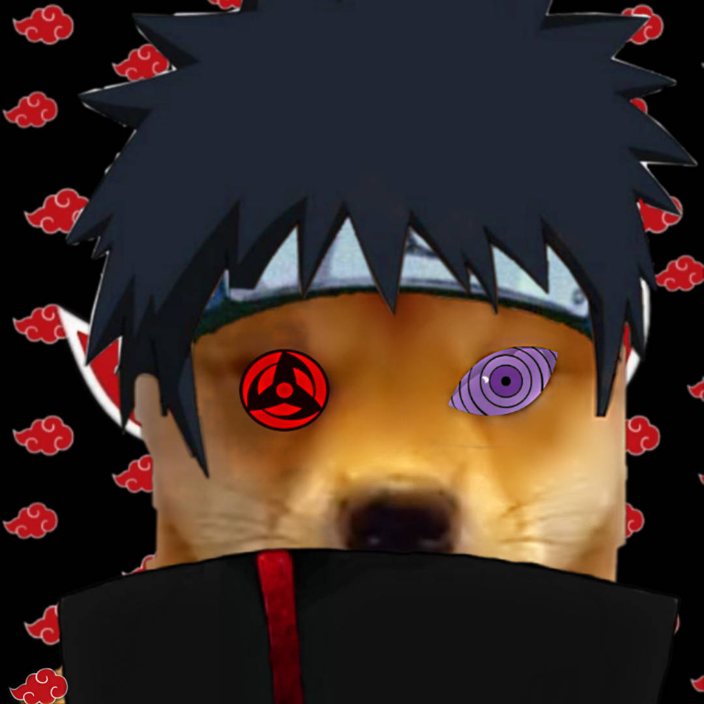

Mohinth balas

Summary
Skilled Uchiha Clan member with mastery of the Sharingan, specializing in Genjutsu, Fire Release, and advanced combat strategies.Loyal, adaptable, and driven to uphold the Uchiha legacy through excellence in leadership and mission execution.
Education
- Ninja Academy, Konohagakure -2019
Graduated Top of Class ⭐⭐⭐⭐⭐
-
- Specialized in ninjutsu, taijutsu, and genjutsu.
- Excelled in tactical analysis and combat strategy.
- Developed proficiency in Fire Release and shurikenjutsu.
- Advanced Sharingan Training Program -2021
Clan-exclusive training ⭐⭐⭐⭐
-
- Achieved advanced control over Mangekyō Sharingan abilities.
- Expertise in Genjutsu application and counter-strategy.
- Mastery of the Sharingan for combat and intelligence gathering.
Experience
Mastered high-level techniques, including Rasengan and summoning jutsu, under Master Jiraya's mentorship for 2 years.
Others